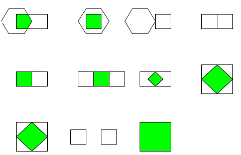

You can view the locations of the photoreceptors. Choose View/Photoreceptor Locations from the menu.
Receptive Field
The photoreceptor is the first stage of processing in the
retina. A photoreceptor responds to the brightness at a certain location on the
screen. It has a steady-state (DC) response and a transient response. The gain
of the transient response is higher than that of the steady state response by a
factor of 2 or 3. The transient response adapts away after a second or
so.
In this simulation we have not
modeled the amazing gain-control of real photoreceptors that let them function
over many decades of illumination. (There's no need for this in the controlled
environment of a virtual tangent screen). We have also not modeled the known
feedback from the horizontal cells to the photoreceptor, via the interesting
triad synapse. However, we have modeled the photoreceptor's temporal adapatation
properties using a linear highpass filter. The
photoreceptors response is the sum
R=
ACGain*Highpass(input)+DCGain*input
We can compute the photoreceptor response to the simple
stimuli you can use in the simulation because people have developed very fast
algorithms for computing the intersections of convex polygons. If we needed to
do a general convolution of the shape of the photoreceptor and an arbitrary
stimulu,s the simulation would probably not run in real time. These polygon
intersections are shown in the output from one of the test classes below.
